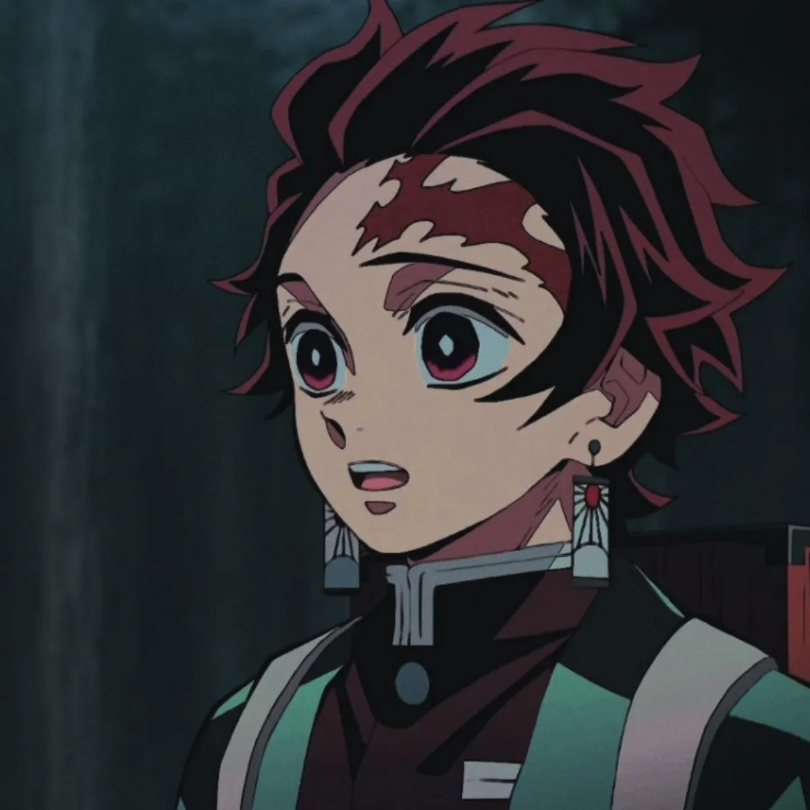

Sobre a Criação do anime
Kimetsu no Yaiba (鬼滅きめつの刃やいば , Ki metsuKimetsu no YaibaYaiba?, lit. Lâmina (刃)Lâmina de Destruição (滅)Destruição de Onis (鬼)Onis), também conhecido pelo título em língua inglesa Demon Slayer (Matador de Demônios, em português) é uma série japonesa de mangá shōnen escrita e ilustrada por Koyoharu Gotōge. O mangá é serializado desde 15 de fevereiro de 2016 e foi encerrado em 18 de maio de 2020 na revista semanal Weekly Shōnen Jump, com seus capítulos sendo reunidos em 23 volumes tankōbon pela editora Shueisha. Uma adaptação de um mangá para um anime de 26 episódios, produzida pelo estúdio ufotable, teve sua 1ª temporada exibida entre 6 de abril e 28 de setembro de 2019,[1] e 2ª temporada, entre 10 de outubro de 2021 e 13 de fevereiro de 2022. [2] Em setembro de 2019, foi divulgado que todos os volumes juntos da série já tinham excedido mais de 10 milhões de cópias vendidas.[3] Em dezembro de 2019, o mangá já contava com mais de 25 milhões de cópias em circulação.[4][5]
Enredo
Ambientada no Japão durante o Período Taishō (1912-1926), a história gira ao entorno de Tanjirō Kamado, um garoto bondoso e inteligente que vive junto com sua mãe e seus irmãos, ganhando dinheiro vendendo carvão, assim como seu falecido pai. Certo dia, ao voltar para casa após ter ido a uma cidade vender carvão, Tanjiro descobre que toda sua família foi atacada por onis, sendo que uma de suas irmãs, Nezuko, é a única que sobreviveu ao ataque. Nezuko então passa a ser um oni, mas ela surpreendentemente ainda demonstra sinais de emoções e pensamentos humanos. Tanjirō decide então se tornar um caçador de onis, e com a ajuda de Nezuko, passa a sair em jornadas pelo Japão a fim de impedir que a mesma tragédia que afetou sua família aconteça com outras pessoas, enquanto que ele busca uma maneira de tornar Nezuko humana novamente.

Personagens
Principal: Tanjirō Kamado (竈門炭治郎 Kamado Tanjirō?) Voz original: Natsuki Hanae (enquanto adolescente), Satomi Satō (enquanto criança) Dublado por: Daniel Figueira (Brasil);[6] Tanjirō é o filho mais velho de um vendedor de carvão. Sua família inteira foi massacrada por um demônio enquanto ele vendia carvão numa cidade, com apenas sua irmã Nezuko sobrevivendo, porém se transformando em oni. Seu objetivo é encontrar uma cura para ela e transformá-la de volta em um humana, e é para esse fim que ele decide se juntar à Ki-satsutai (鬼殺隊? lit. "Organização dos Aniquiladores de Demônios").